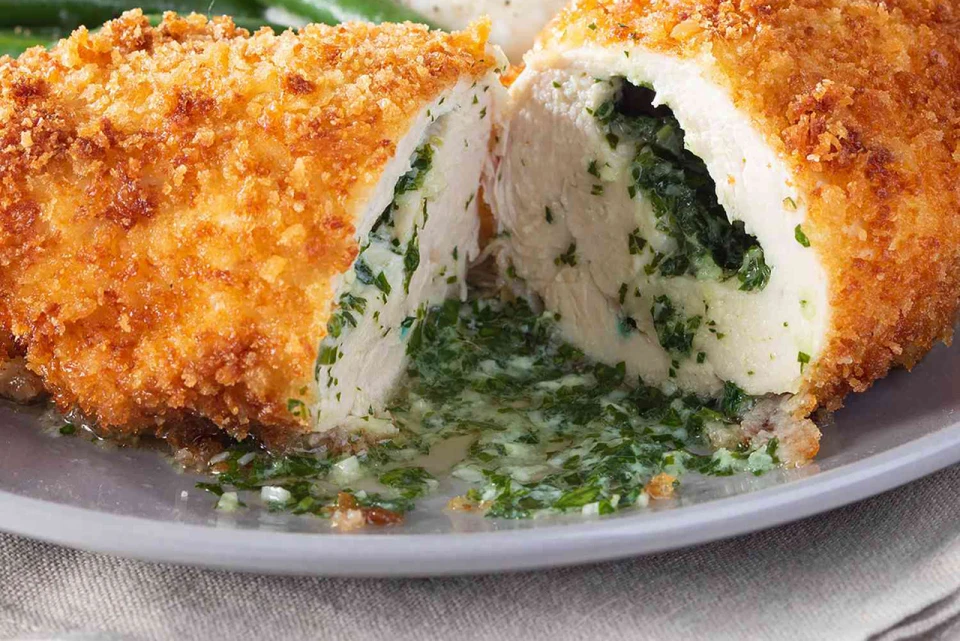

Меню
| Назва страви | Зображення | Ціна |
|---|---|---|
| Борщ |  | 120 грн |
| Вареники |  | 100 грн |
| Галушки | 110 грн | |
| Котлета по-київськи |  | 150 грн |
| Салат Олів’є |  | 90 грн |
| Пампушки з часником |  | 70 грн |
| Деруни |  | 85 грн |
| Квасоля по-українськи |  | 95 грн |
| Пиріг з м’ясом | 130 грн | |
| Крученики | 140 грн | |
| Уха |  | 125 грн |
| Компот | 50 грн |
Наші кухарі
Олег К.
Євген В.
Артем П.

Іван І.
Про нас
Ресторан "Смак" — це місце, де українська кулінарна традиція поєднується з сучасними гастрономічними тенденціями. Ми пропонуємо широкий вибір страв, приготованих з любов’ю та лише зі свіжих продуктів. Наші кухарі — справжні майстри своєї справи, які щодня працюють над тим, щоб кожна страва дарувала незабутні враження. Затишна атмосфера, привітний персонал і смачні наїдки — усе це чекає на вас у «Смаку».
Де ми знаходимося?
Ви знайдете нас за адресою: вул. Київська, 12, м. Київ, Україна